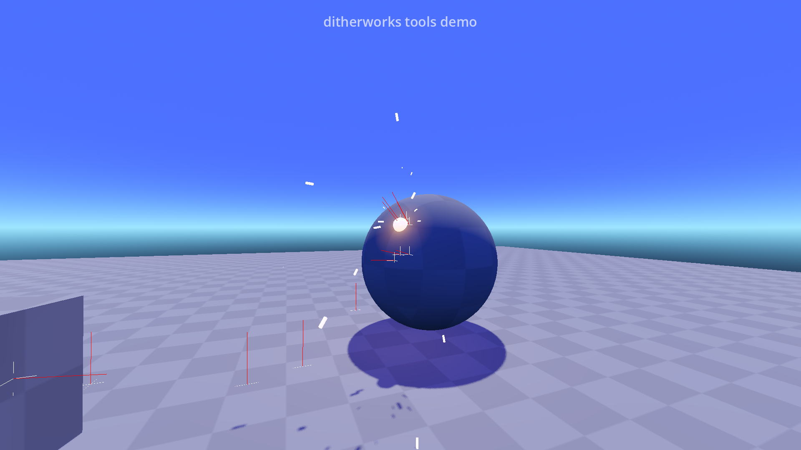
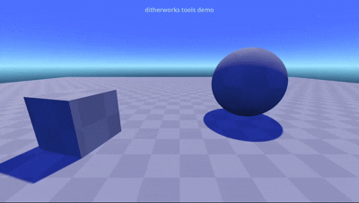

/ Projects
Ditherworks Tools for Godot
- Status: Open Source (Github)
- Engine: Godot
This is an open-source collection of simple addons and classes to streamline the prototyping process in Godot.
- Editor Addons for smart window control and particle previewing
- Debug Line drawing class for visual feedback during development
- A simple, quake style console for command-based debug inputs during testing
- FX Manager for convenient multi-node particle effect spawning and clearing
- Extendable State Machine class


Feel free to check out the source repo on Github